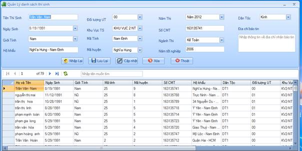
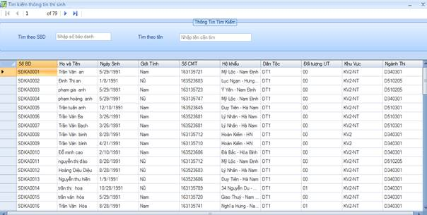

Chức năng quản lý thông tin thí sinh
Để thêm, xóa , cập nhật và tìm kiếm thí sinh. Sau khi nhập đầy đủ các thông tin của thí sinh thì ấn vào nút lưu lại để lưu thông tin, nếu thông tin của ai đó sai thì ấn vào lưới hiển thị chọn thí sinh đó, dữ liệu sẽ hiện lên các điều khiển bây giờ bạn sửa thông tin cần chỉnh sửa sau đó ấn nút Cập nhật để cập nhật lại dữ liệu. Nếu muốn xóa một thí sinh thì chọn vào dòng chứa thí sinh sau đó ấn nút xóa. Nút nhập lại để xóa các điều khiển cho bạn nhập lại dễ hơn. Trên lưới có biểu tưởng Làm mới để làm mới cơ sở dữ liệu hiện ra lưới. Muốn tìm kiếm thông tin thí sinh, nhập tên vào ô nhập tên trên lưới.
Form quản lý thông tin thí sinh

Để tìm kiếm thông tin thí sinh, nhấn vào nút tìm kiếm TS trên menu quản lý hồ sơ, sau đó nhập tên hoặc số báo danh muốn tìm
Hình 4.5. : Form tìm kiếm thông tin thí sinh
